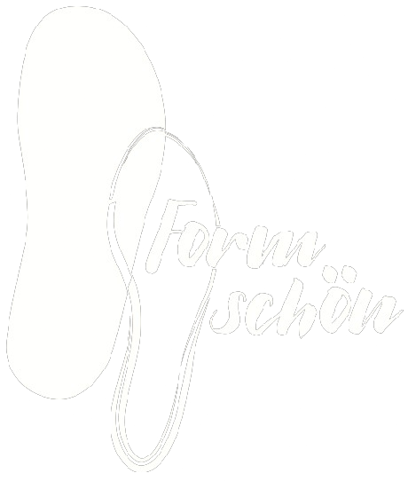
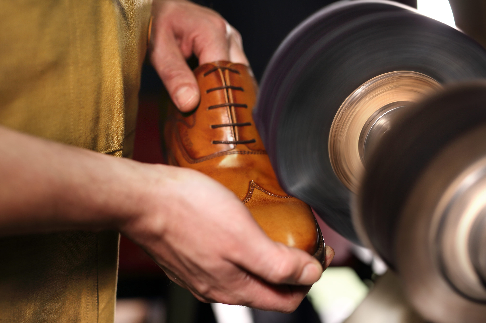
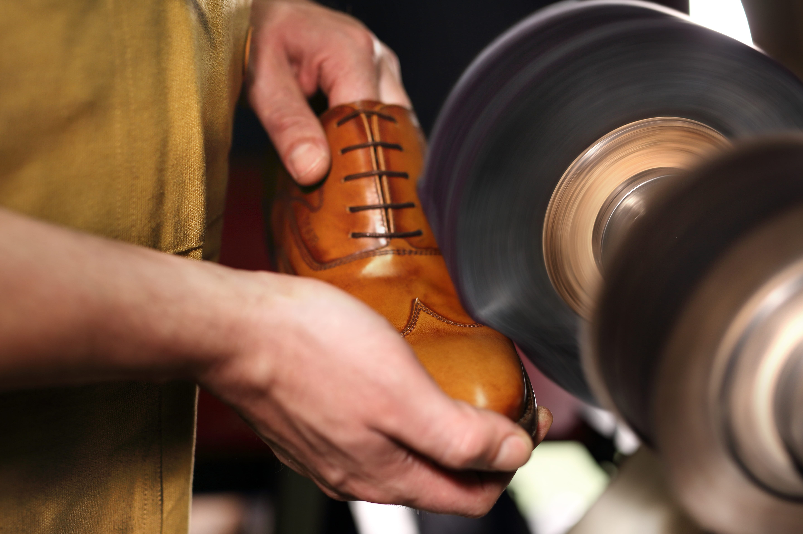

In September 2001, we siblings, Maria Gracia and Paolo Zuretti, opened our shoe manufactory in Bad Godesberg. Prior to this, we had both acquired a master craftsman's certificate and gained several years of professional experience in various workshops. In September 2021, we will be celebrating the 20th anniversary of our manufactory. We look forward to your visit - whether online or directly at Alte Bahnhofstraße 5a in Bonn-Bad Godesberg.


Together we siblings, Maria Gracia and Paolo Zuretti, open our shoe manufactory in Bad Godesberg. We have both acquired a master craftsman's certificate and have already gained several years of professional experience in various workshops.
Lukas Bischoff starts his apprenticeship with us. Today he is the team's specialist for upper production.
WDR regional television visits the manufactory and portrays our work. This is the breakthrough: many potential customers become aware of us - and not just in the Rhineland.
We open a small showroom next to our workshop and store. This ensures an individual atmosphere when taking measurements and trying on shoes.
The Formschön shoe manufactory presents its models at the Rhineland Crafts Exhibition in Düsseldorf.
We participate in the reorganization of the "bespoke shoemaker" profession so that our young professionals are up to date. March 2016 We are a guest at the European leather and fashion trade fair in Brussels.
The annual meeting of bespoke shoemakers from German-speaking countries takes place at our Formschön shoe manufactory.
We show the production of bespoke shoes at the "Tage der Manufakturen" in Berlin.
Leonie Meißner starts her new apprenticeship as a bespoke shoemaker with us.
We celebrate our 20th anniversary.
Come to us with high-quality leather goods if something is broken. For example: a torn strap on a rucksack, a zipper on a bag that has snagged, the soles of boots that have been kicked askew, a shoe heel that has become loose. The preservation of beautiful quality goods that have become dear to you is important to us. Throwing them away is a thing of the past!
Talk to us if you want to wear exclusive shoes, models according to your fashion ideas and the characteristics of your feet. In addition to custom-made shoes, there are also more cost-effective options, such as made-to-measure clothing with a wide range of options. Do not hesitate!
Talk to us if you want to wear exclusive shoes, models according to your fashion ideas and the characteristics of your feet. In addition to custom-made shoes, there are also more cost-effective options, such as made-to-measure clothing with a wide range of options. Do not hesitate!


 
